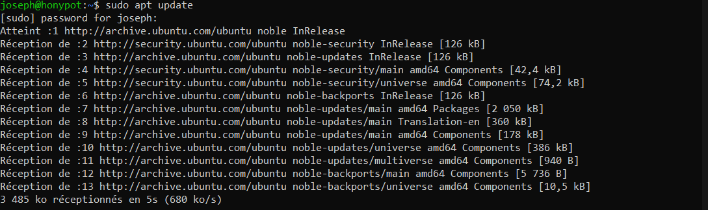
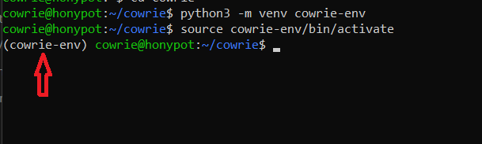
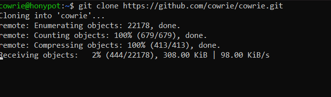

Portfolio de cybersécurité appliquée
Je transforme les attaques en preuves utiles.
Cybersécurité offensive & défensive — Pentest, SOC et sécurité des systèmes
Je conçois et documente des labs, writeups et projets de détection afin de développer des compétences opérationnelles en analyse d’attaques, sécurité réseau et réponse aux incidents.
Penetration testingThreat detectionNetwork securityIncident responseTechnical writing
Penetration testingThreat detectionNetwork securityIncident responseTechnical writing
Dossier / 001
HoneyShield,
HoneyShield,
vu de l’intérieur.
Un projet présenté comme une enquête : architecture, installation, collecte et analyse. Passe sur chaque étape pour faire remonter la preuve correspondante.
Projet vedette
Environnement honeypot supervisé



Architecture du laboratoire : Kali Linux, HoneyShield et Wazuh Server reliés dans un environnement contrôlé.Architecture
Preuves / 003
Pas de promesse.
Pas de promesse.
Des traces.
Une sélection de captures issues du travail réel. Fais glisser horizontalement pour parcourir les étapes du laboratoire.

01
Préparer la source
Clonage du dépôt officiel et mise en place d’une base modifiable pour le laboratoire.
02
Isoler les dépendances
Activation d’un environnement Python dédié afin de conserver une installation propre et reproductible.
03
Construire proprement
Mise à jour de la machine et préparation des dépendances avant le déploiement des services leurres.
Index / Public
Tout le travail,
Tout le travail,
sans détour.
Les différentes parties du portfolio deviennent des entrées d’archive, avec leurs volumes réels chargés depuis les données existantes.
Disponible pour stages, projets et collaborations
Parlons d’un problème réel.
Présente le contexte, les contraintes et le résultat attendu. Je répondrai avec la même logique que dans mes dossiers : comprendre, tester et documenter.
Hackus Mans